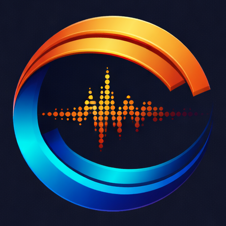
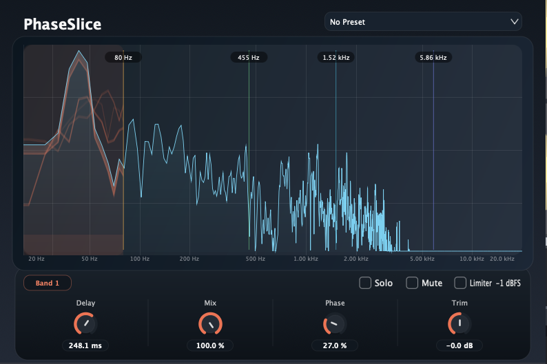

Released — Version 1.0.0.
Next: Version 1.1 will raise the
maximum Delay to 50 ms with
0.01 ms resolution.
5-band split-delay and phase-shaping plug-in
PhaseSlice is a macOS plug-in (AAX / AU / VST3) that goes one step past a band-pass filter: instead of just isolating a frequency range, it lets you delay only that band by a few milliseconds up to longer texture-shaping values. In the upcoming v1.1 update, the maximum Delay will be expanded to 50 ms with 0.01 ms resolution, then blend it back with per-band mix, trim, polarity, and phase control.
Initial public release is now available.

FFT display, crossover markers, and a delay profile view so the band timing shape is visible at a glance.
Focused editing for the selected band: delay, mix, trim, phase, polarity, solo, and mute.
PhaseSlice is especially useful on kick drums when you want to reshape the apparent weight, click, or front-edge timing of different frequency areas without simply boosting EQ.
It also works well on individual drum hits such as snares, toms, or percussion when you want tighter low-end alignment, sharper attack focus, or slightly unusual phase-based texture.
While it can be used more experimentally on other material, the most practical starting point is usually drum sound shaping rather than full-mix processing.
Planned next update: v1.1 will expand the Delay range to 50 ms and refine control resolution to 0.01 ms.
Download: PhaseSlice_1.0.0.pkg
PhaseSlice_1.0.0.pkgPhaseSlice_1.0.0.pkg from this page.Email: kjdevapphelp@gmail.com
Please include your macOS version, host DAW, plug-in format, and a short description or screenshot.